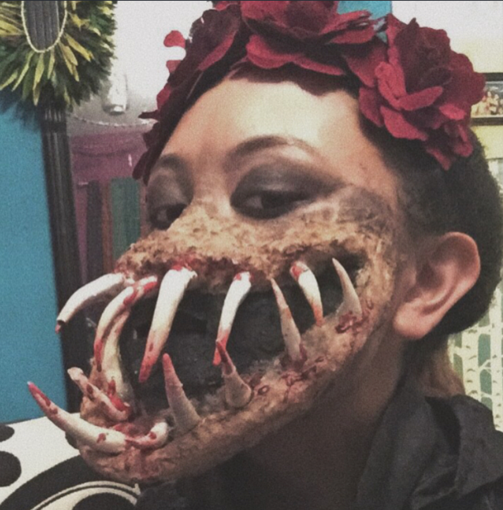

Jana Georgievski

Aragon High School Class President
Python, HTML/CSS, & Javascript
Vintage Fashion & Modeling
Special Effects Makeup
Social Justice
16
Jana Georgievski
 Aragon High School Class President Python, HTML/CSS, & Javascript Vintage Fashion & Modeling Special Effects Makeup Social Justice 16
Aragon High School Class President Python, HTML/CSS, & Javascript Vintage Fashion & Modeling Special Effects Makeup Social Justice 16Leadership
2017-18 Sophomore Class Vice President 2018-19 Junior Class PresidentCoding languages
Python HTML/CSS JavaScriptModeling
I take inspiration from 70's, 80's & 90's clothing. My style on InstagramSocial Justice
In March 2018, after the Parkland shooting, I helped organize a San Mateo-to-San Francisco march against lenient gun control laws. About 20 other teens from four other high schools and I partnered with March For Our Lives, an organization led "by students for students". As people who didn't feel safe in our own schools, we took the initiative to bring on change. After planning logistics, my specific task was social media facilitation and publisizing the march.SFX makeup
 Halloween 2016